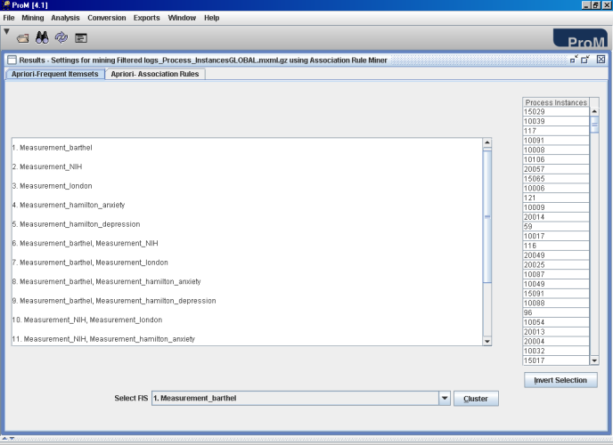
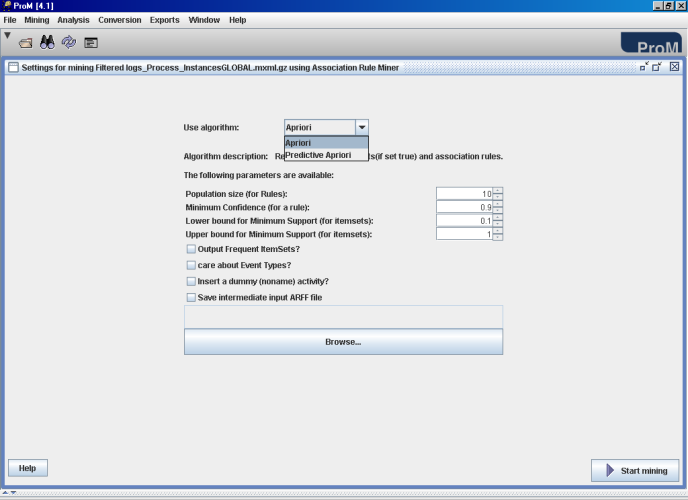
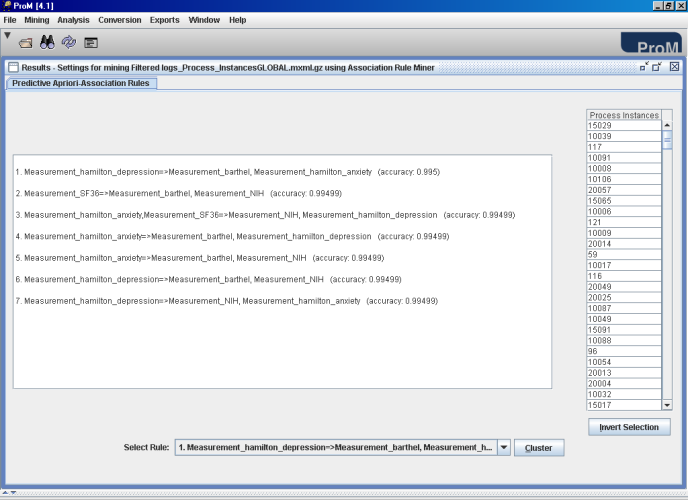
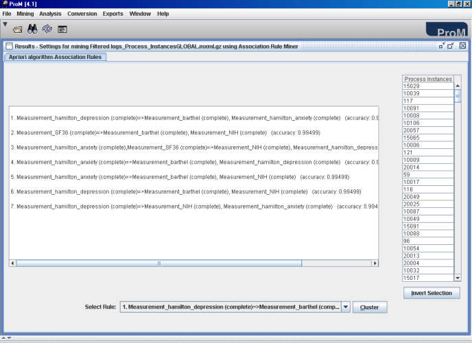
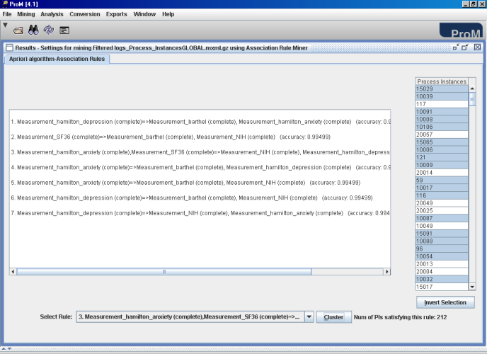
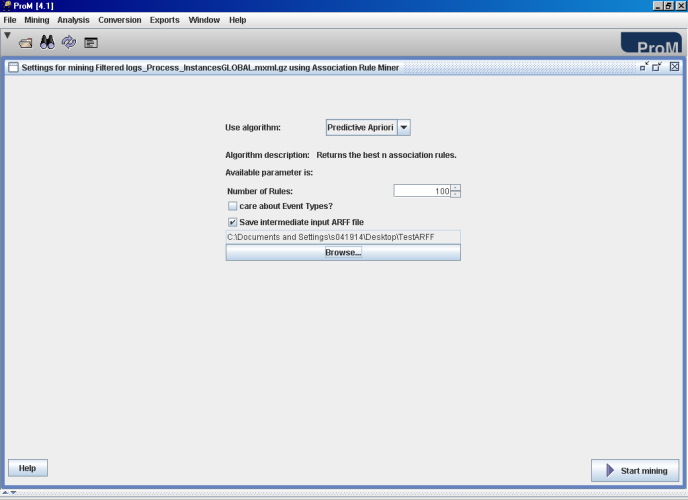

The purpose of the Association Rule Miner plug-in is to discover association rules from the event log. The approach of the plug-in is based on machine learning techniques and the ARM uses algorithms implemented in the Weka library [1] to generate association rules.
Association rules, as the name suggests are the rules that shows associations between various items. These items can be products in your shopping basket, they can be spare parts in an automobile company information system, and many other such examples can be thought of. In the context of ProM these items are the activities in an event log.
An example association rule is:
computer =>antivirus_software [support 2%, confidence=60%]
The above rule gives the information that customers who purchase computers also tend to buy anti-virus software at the same time.
Rule Support and confidence are two measures of rule interestingness. They respectively represent usefulness and certainty of discovered rules. A support of 2% for above association rule means that 2% of all the transactions under analysis show that computer and antivirus software are purchased together. A confidence of 60% means that 60% of the customers who purchased a computer also bought the software.
In general, if we have an association rule: a =>b then the support count indicates the joint probability of a and b. It is calculated as:
Support (a =>b) = Number of transactions containing (a U b)/ Total number of transactions
Confidence indicates the conditional probability of b given a. It is calculated as:
Confidence (a =>b) = Number of transactions containing (a U b)/ Number of transactions containing a
In general the discovery of interesting correlation relationships among huge amounts of business transaction records can help in many business decision making processes, such as catalogue design, cross marketing, and customer shopping behaviour analysis. These association rules show relationship between various items in the database or between various activities in an event log (in context of ProM).
There are various algorithms that discover associations among items in large transactional or relational data like Apriori, Predictive Apriori, AprioriTid, Tertius etc. Every algorithm follows two steps:
Find all frequent itemsets. An itemset (set of items) satisfying a minimum support value is referred to as frequent itemset or large itemset. This minimum support value is called the minimum support threshold.
Generate association rules from these frequent itemsets. Generate strong association rules from the frequent itemsets. The rules that satisfy both a minimum support threshold and a minimum confidence threshold are known as strong rules. Strong rules are preferred because it is not practical to do an exhaustive search for thousands of potential rules that can be generated from a database. Many of these rules will not be of interest and use because they may be unreliable due to low support or confidence values. Therefore it is common to generate only those rules that have a minimum specified support and confidence values. Such rules are called strong association rules.
This plug-in provides you two algorithms to generate association rules. They are: Apriori algorithm [2] and Predictive Apriori algorithm [3].
The input to the plug-in is an event log. When we choose the plug-in from the list of mining plug-ins in ProM we get the following screen:
Figure 1: Apriori algorithm and its parameters in the Association Rule Miner plug-in
On the screen we can see we have an option to choose an algorithm, as well as we can see a brief description of the algorithm.
Use Algorithm: This allows the user to make a selection from Apriori and Predictive Apriori algorithms.
Algorithm description: This provides the user with a one-line description about the algorithm he has chosen.
On the basis of the algorithm that a user chooses he is made available certain parameters. Following parameters are available for the Apriori algorithm:
Population size (for Rules): The user can specify the population size from which the association rules will be generated. The original Apriori algorithm takes this parameter as the number of rules. The parameter population size indicates how many number of rules generated initially will be used for pruning and retaining the non-redundant rules.
Minimum Confidence (of a rule): The user can specify the minimum confidence the rules must have. As indicated earlier, confidence represents how strong a rule is. The default confidence value is 0.9 or 90%.
Lower bound & Upper bound for minimum support: The user can also specify the support of an itemset using two parameters- lower bound for minimum support and upper bound for minimum support. By using this range of support values we can experiment with different rules that have itemsets with a support count lying in this range of values. For example, if the lower bound value is set to 0.6 and the upper bound value is set to 0.9, it means we are interested in itemsets that occur in not less than 60% of the process instances and in not more than 90% of the process instances out of the total number of process instances in the log. The default values of the lower bound and upper bound for minimum support is 0.1 and 1 respectively.
Output Frequent ItemSets: If the user decides to select this option, he will also output the frequent itemsets. By default this option is not selected.
Care about Event Types: Through this option, the user can choose to work with or without the event type of tasks.
Insert a dummy (noname) activity: General rules of the form [ =>a1,...,ak] are generated if the user selects this option.
Besides these parameters, the user is also provided with a facility to save the intermediate Attribute Relation File Format (ARFF) file. The plug-in takes an MXML log as input and internally converts this log file into ARFF format which is necessary as we use the algorithms from the Weka library. So, if the user also wants to experiment with other algorithms available in the Weka library he can save the intermediate ARFF file. For this, he should select the option Save intermediate input ARFF file and then click Browse... button to specify the location where he wants to save this file. The text field will show the path selected by the user.
The user then must press the Start Mining button to start executing the algorithm as well to save the ARFF file too. If the user successfully saves the file he gets a confirmation message.
If the user does not select the option to output the frequent itemsets he gets the following screen:

Figure 2: Association rules from Apriori in ARM can be seen as a list as well as a text
On the left-hand side we can see that 4 association rules are generated from the population size of 10. Let us interpret one of the rules. For example, rule number 3 i.e.
Measurement_hamilton_anxiety =>Measurement_barthel (conf:1)
The rule contains 1 item on the left hand side and 1 item on the right hand side. Items on the LHS are called antecedents and the items on the RHS are called consequents. A rule may have multiple antecedents and multiple consequents. This rule says: "if activity measurement_hamilton_anxiety happens, activity measurement_barthel will also happen. The confidence of this rule is 1 indicating that 100% of the process instances where measurement_hamilton_anxiety executes, measurement_barthel will also execute.
We can also choose to show frequent itemsets along with the rules. For this we check the corresponding option and we obtain the following output.

Figure 3: Frequent ItemSets from the Apriori algorithm
In Figure 3, we can see both the frequent itemsets and the association rules using the corresponding tab.
The user can also choose to generate association rules using the Predictive Apriori algorithm. This can be done by making this selection as shown below:

Figure 4: Select from algorithm- Apriori or Predictive Apriori
After selecting the Predictive Apriori algorithm, the user receives the following screen:

Figure 5: Predictive Apriori algorithm and its parameter
We can see that the Predictive apriori algorithm generates the best n rules where n is the number of rules to be specified by the user. We can also note that the only parameter we are required to specify is the number of rules. This algorithm is based on the concept of predictive accuracy which combines both the support and confidence measures. The user has also the option of saving the intermediate ARFF file. By default 100 rules are generated, this is also the maximum number of rules that can be generated. Minimum number of rules that are generated is 1. For example, we want to generate 10 rules. We obtain the following rules for the log being used:

Figure 6: Output of the Predictive Apriori algorithm
The rules are interpreted in the same way as in Apriori algorithm. But we see the (predictive) accuracy values instead of the confidence values. We can understand that the confidence of a rule is the ratio of correct predictions over all record for which a prediction is made. The predictive accuracy c (a=>b) of an association rule can be defined as the probability of a correct prediction with respect to the process underlying the database. The rules in predictive apriori algorithm are ranked on the basis of their predictive accuracy values.
As already indicated that the user can choose to work with event types. If in Figure 5, the user selects the option care about Event Types? he is able to generate the rules along with event type information, as seen in the figure below.

Figure 7: Association rules with event type information
On the right hand side of figures 2, 3, 6 & 7, we see a list of process instances in a table. If the button Cluster is clicked then all the process instances satisfying the selected rule or the frequent itemset will be seen in grey shade in the process instance table. This gives us an indication of how many process instances satisfy a particular rule/frequent itemset.
Once we have the process instances satisfying a particular rule or frequent itemset, these can be exported to an mxml log or used for mining with any other mining algorithm. If we cluster on the basis of rule 3 in Figure 7 we obtain the following output:

Figure 8: Cluster of process instances satisfying an association rule
As shown in figures above, we can also save the intermediate ARFF file at a specified location. For this we specify the desired location by using the browse button. Figure 9 shows this:

Figure 9: Saving the intermediate ARFF file to the specified location
Once the file is successfully saved the user gets the message as shown in the following figure:

Figure 10: Intermediate ARFF file successfully saved!
This ARFF file can be directly loaded in Weka library to experiment with all Weka algorithms. The figure below shows how this ARFF file looks:

Figure 11: Saved ARFF file
The first line in the file with the tag @relation indicates the name of this file, which is the name of the log used for mining. This name will help the user keep track of which log file is converted to ARFF for association rule mining.
In the next lines are the tag @attribute. This represents the activities in the log. T In this case we have 6 activities, namely Measurement_barthel, Measurement_NIH, Measurement_london, Measurement_hamilton_anxiety, Measurement_hamilton_depression, Measurement_SF36 and Measurement_glasgow. We can also see {yes,?} besides the activity names. This indicates the values these attributes can take. In terms of data mining, the activities are treated as attributes which can have some values.
The association rules that are mined by the ARM are boolean association rules which establish associations between the presence or absence of the items. So, each activity (attribute) has two values-yes or ? based on its presence or absence in a particular process instance. A ? indicates that the activity is not present in a particular process instance.
The next tag is @data. This is the converted mxml log into a log format acceptable by Weka. If we look at the process instances here we see they contain yes or no values. Let us analyze the first process instance:
yes,yes,yes,yes,yes,yes,?
This means this process instance consists of all activities except the activity Measurement_glasgow.
For more information, please refer to the following publications:
[1] R. Agrawal and R. Srikant. Fast Algorithms for Mining Association Rules. In Proc. of the 20th Int'l Conference on Very Large Databases, Santiago, Chile, September 1994.
[2] T. Scheffer. Finding Association Rules That Trade Support Optimally against Confidence. In Proceedings of the 5th European Conference on Principles of Data Mining and Knowledge Discovery (September 03 - 05, 2001). L. D. Raedt and A. Siebes, Eds. Lecture Notes In Computer Science, vol. 2168. Springer-Verlag, London, 424-435.
[3] I. H. Witten and E. Frank. Data Mining: Practical machine learning tools and techniques, 2nd Edition. Morgan Kaufmann, 2005.
[4] S. Gupta. Master thesis. Workflow and Process Mining in Healthcare. Department of Mathematics and Computer Science, Technische Universiteit Eindhoven, May 2007.